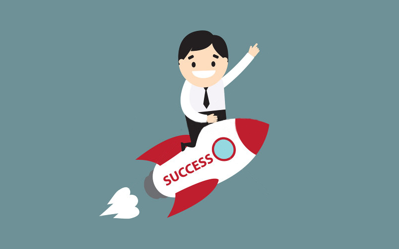
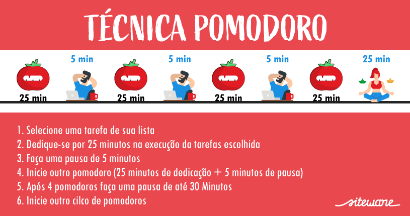

Dicas de como ser mais produtivo e organizado
Estabeleça metas

As metas de produtividade são indicadores individuais que vão orientar as ações de c
olaboradores e gestores de diferentes níveis hierárquicos em direção aos seus objetivos.
Elas mostram a capacidade de produzir mais com os mesmos recursos, sejam financeiros,
humanos ou, simplesmente, tempo.As metas de produtividade precisam ser colocadas pensando
a curto e médio prazo (não apenas à longo), de forma individual e coletiva. Na hora de definir
suas metas, seja realista e pense em uma premiação por cumpri-las. Além disso, é interessante
que se faça uma revisão periódica a fim de identificar as necessidades de ajustes.
Mantenha um bom ambiente de trabalho
 O ambiente de trabalho vai muito além de um espaço físico. É onde profissionais desenvolvem suas atividades
trabalhistas, de acordo com as condições e influência do funcionamento de uma empresa e as relações ali estabelecidas.
Um bom ambiente de trabalho precisa ser bem ventilado, limpo, ser seguro, ter uma rotina e máquinas funcionando
adequadamente e ser confortável.
O ambiente de trabalho vai muito além de um espaço físico. É onde profissionais desenvolvem suas atividades
trabalhistas, de acordo com as condições e influência do funcionamento de uma empresa e as relações ali estabelecidas.
Um bom ambiente de trabalho precisa ser bem ventilado, limpo, ser seguro, ter uma rotina e máquinas funcionando
adequadamente e ser confortável.
Crie listas de tarefas
É essencial definir prioridades, principalmente quando se lida com clientes e prazos. Hoje existem softwares
especializados que ajudam a gerenciar o fluxo de trabalho de cada colaborador com visão detalhada e compartilhada.
Para isso, anote o que precisa ser feito durante um dia de trabalho e enumere cada item em ordem de prioridade.
Quando o expediente terminar, transfira imediatamente aquilo que não foi realizado para a lista seguinte, assim
nenhum compromisso será esquecido.
Elimine distrações
As diversas notificações de redes sociais, telefones, e-mails, colegas prejudicam em muito a concentração na hora de
realizar uma tarefa.Para resolver isso, primeiro, identifique as suas próprias distrações.
Desligue notificações e pop-ups, defina limites diários para redes sociais e horários para ver e-mails.Também,
há a opção de diversas extensões para navegadores e aplicativos que podem te ajudar a bloquear distrações enquanto
estiver trabalhando.
Utilize a técnica Pomodoro

A técnica Pomodoro foi desenvolvida em 1988 pelo italiano Francisco Cirillo e é indicada para pessoas que têm tendência
a adiar suas atividades.O método é simples e dura duas horas. Você realizará uma atividade durante 25 minutos e
descansará por 5 minutos. Então irá repetir mais três vezes, até se somar as duas horas, e como recompensa você
descansará mais 30 minutos.